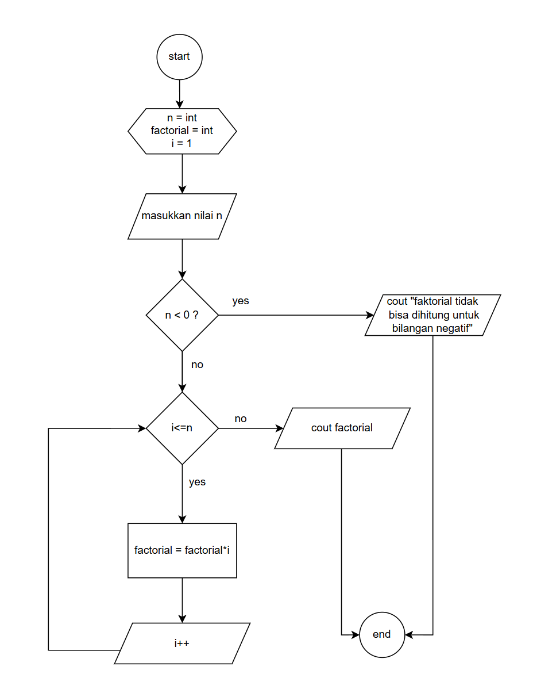

Deskripsi
Faktorial dari sebuah bilangan bulat positif (n) (ditulis n!) adalah hasil kali
dari semua bilangan bulat positif kurang dari atau sama dengan n.
Contoh: Faktorial dari 5 (ditulis 5!) adalah 5 × 4 × 3 × 2 × 1 = 120. Jadi, 5! = 120.
Faktorial juga didefinisikan untuk 0 sebagai 0! = 1.
Flowchart
Pseudocode
1. mulai
2. Fungsi Faktorial(n):
3. Jika n == 0:Kembalikan 1
4. Lain: Kembalikan n * Faktorial(n - 1)
5. selesai
code in c++
#include <iostream>
using namespace std;
int main() {
int n;
unsigned long factorial = 1;
cout << "Masukkan bilangan: " ;
cin>> n;
if (n < 0) { cout << "Faktorial tidak bisa dihitung untuk bilangan negatif" ;
return 1;
}
for(int i=1; i <=n; i++) {
factorial *=i;
} cout << "Faktorial dari " << n << " adalah: " << factorial;
return 0;
}
Contoh Hasil
Misal Input = 5
Hasil = Faktorial dari 5 adalah: 120